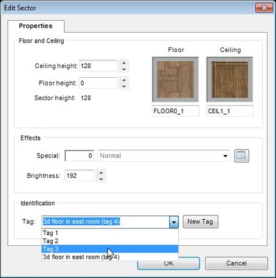
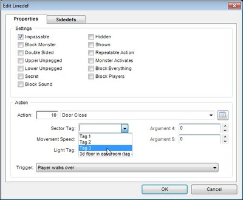
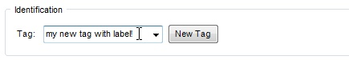
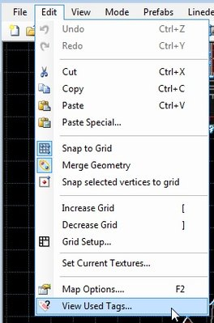
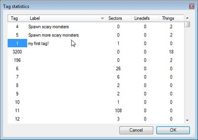
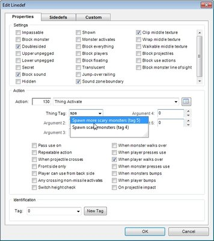
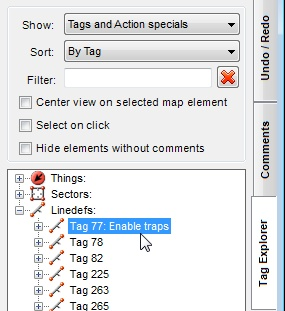

| If a tag is already used in a map, you can pick it from the list: |  |
This also works for action arguments. Only relevant tags will be shown in this case (e.g. if an argument is sector tag, only sector tags will be shown in the drop down). |
 |
You can add labels to tags. This can be done in several ways:
1. If you type text in tag selector, unused tag number will be found, and your text will be assigned to it as a label (this won't work for action arguments).

2. You can use Tag statistics form to view all tags used in a map, and view and edit labels, assigned to them:


Double-click on values in "Label" column to edit tag labels.
Double-click on Sectors, Linedefs or Things cells to select map elements, right click to open their properties.
All columns are sortable.
Tag labels support autocompletion. Start typing tag label to show autocompletion list:

When sort mode is set to "By Tag", tag labels will be shown in Tag Explorer:
